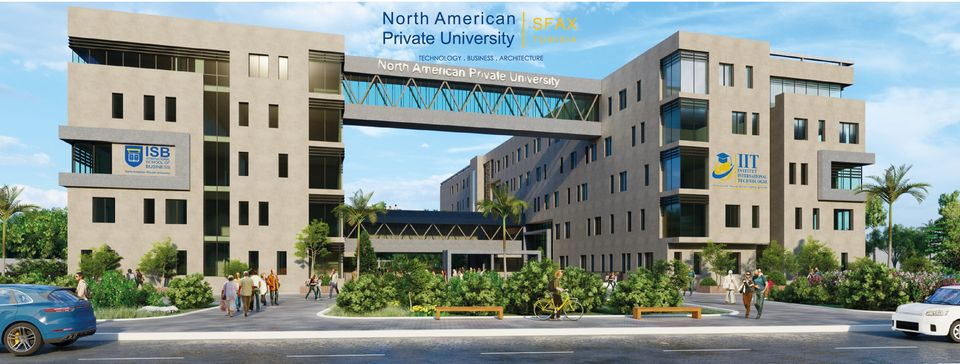

C’est un organisme d’enseignement supérieur privé agréé par le Ministère de l’Enseignement Supérieur et de la Recherche Scientifique. Il a été inauguré le 23 Août 2012.
Des formations solides et concrètes en adéquation avec les réalités du marché du travail tunisien.
L’instauration de l’IIT était dans l’objectif d’offrir aux étudiants un environnement favorable et des formations pratiques basées sur un système éducatif intégré en totale adéquation avec les besoins professionnels et le marché du travail en Tunisie et à l’étranger.
Des formations agréées et conformes aux normes nationales et internationales.
Nos diplômes, conçus avec quelques experts nationaux et internationaux, sont établis conformément aux programmes nationaux et aussi aux normes académiques internationales. Notre personnel enseignant, nos formateurs et nos experts sont en prise directe avec les actualités pédagogiques, scientifiques et professionnelles. Tout cela afin de doter les étudiants d’une formation pratique et leur permettre de répondre positivement aux besoins des professionnels et des recruteurs.
Des formations continues et des échanges doctoraux avec des universités occidentales.
Nos programmes d’échanges et nos partenariats donnent la possibilité à nos étudiants de poursuivre leurs études dans plusieurs cycles d’universités canadiennes, américaines et françaises.
Les formations continues permettent à notre corps enseignant, à nos étudiants diplômés de se mettre au diapason tout en continuant une activité professionnelle. La compétitivité et l’excellence du savoir-faire sont les buts recherchés.
Les valeurs fondamentales qui ont conduit à la création de l’Institut International de Technologie sont les suivantes :
L’IIT a établi des relations de coopération et de complémentarité avec plusieurs institutions universitaires régionales et internationales :
Comme la Faculté des Sciences de SFAX (FSS), l’Institut Préparatoire aux Etudes d’Ingénieurs de SFAX (IPEIS), l’Ecole Nationale d’Electronique et de Télécommunications (ENET’Com), l’Institut Supérieur de la Gestion Industrielle de SFAX (ISGI), l’Institut Supérieur d’Informatique et de Multimédia de SFAX (ISIMS), l’Institut Supérieur des Etudes Technologiques de SFAX (ISET).
Quant aux institutions internationales, nous citons :
Université de Génie de Sherbrooke, Ecole d’ingénierie Informatique de France (EPSI), Globe University (Etats Unis), Université de Quebec à Trois Rivières et celle de Moncton (Canada) et Canadian University of Dubaï (Dubaï).
L’IIT accorde une attention particulière à la recherche scientifique notamment dans le domaine des énergies renouvelables, de l’environnement, de la sécurité informatique, d’impression 3D, de l’information et de la communication (TIC). Elle a créé un centre de recherche, de développement et de créativité, ainsi qu’un laboratoire de Fabrication (FABLAB),L’Institut est aussi doté d’une pépinière qui facilite et encourage les jeunes diplômés à lancer leurs start-ups dans un environnement compétitif.
L’IIT accorde une importance capitale à la qualité des enseignants recrutés, à leurs compétences, leurs capacités d’amélioration continue et leur application d’une pédagogie active et des nouvelles techniques d’enseignement.
Notre établissement s’engage à offrir à ses étudiants et à ses chercheurs un environnement favorable qui est à la fois moderne et bien adapté pour assurer la meilleure qualité de vie universitaire.